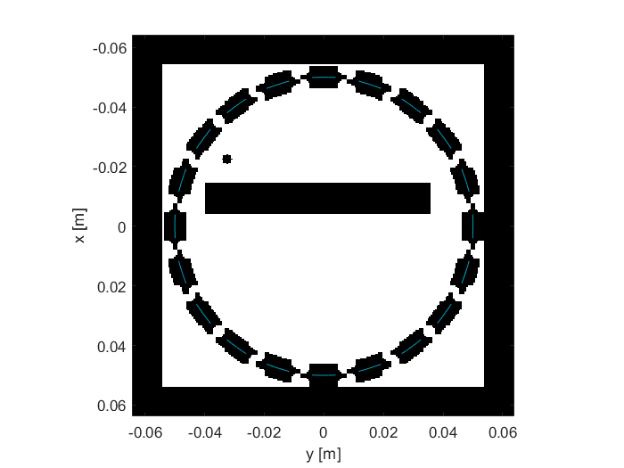
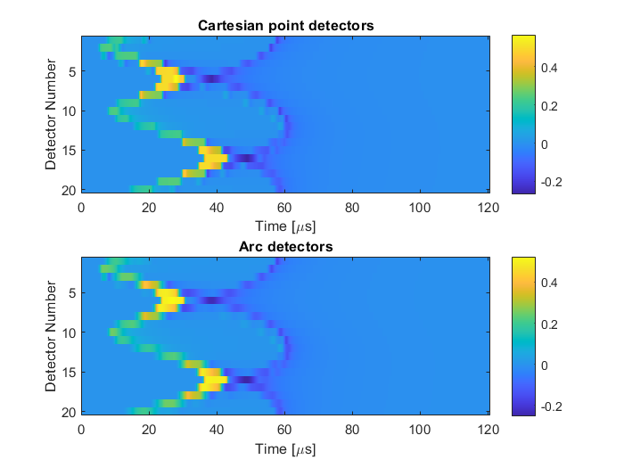
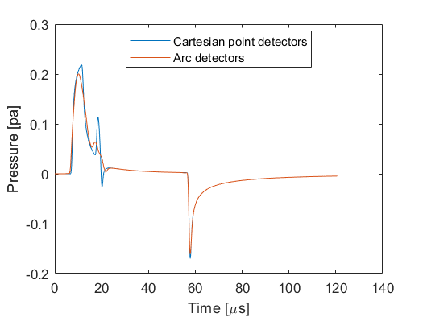

Defining A Sensor Using An Array Transducer Example
This example provides a demonstration of using the kWaveArray class to define an array transducer with 20 arc-shaped elements which is then used as a receiver array. It builds on the Defining A Source Using An Array Transducer Example.
Contents
Defining the array
In the Defining A Source Using An Array Transducer Example, an array was defined using the kWaveArray class and used to create a source for a 2D simulation. In this example, the same array class is used to create a sensor. The kWaveArray class doesn't make any distinction between sources and sensors, it is just a container holding the physical properties of a collection of transducer elements. The syntax for creating a sensor is thus identical to the previous example. Here, an array is created with 20 arc-shaped elements placed around the outside of a circle, where the elements all point to the center.
% create empty array karray = kWaveArray; % set the properties for the arc shaped elements and the ring geometry in % which they're placed radius_of_curv = 100e-3; diameter = 8e-3; ring_radius = 50e-3; num_elements = 20; % orient all elements towards the centre of the grid focus_pos = [0, 0]; % generate the centre position for each element in Cartesian space using % makeCartCircle (these positions could also be defined manually, etc) elem_pos = makeCartCircle(ring_radius, num_elements, [0, 0]); % add elements to the array for ind = 1:num_elements karray.addArcElement(elem_pos(:, ind), radius_of_curv, diameter, focus_pos); end
Defining the sensor mask
To use the array with the simulation functions, a binary mask must again be generated using getArrayBinaryMask. In this example, the mask is assigned to sensor.mask (in the previous example, it was assigned to source.p_mask).
% assign binary mask from karray to the sensor mask
sensor.mask = karray.getArrayBinaryMask(kgrid);
The binary sensor mask is shown below, with the physical transducer elements overlaid in blue. This example models an initial value problem, so the initial pressure distribution (a rectangle and small circle) and the PML around the outside of the domain are also shown. Again, the sensor mask is non-local, extending around the physical arc-shaped elements.
Combining the sensor data
The simulation is run by passing the grid, medium, source, and sensor inputs to kspaceFirstOrder2D. The returned sensor_data contains the time-varying pressure field at each grid point that formed part of the sensor mask (the sensor mask is shown in the figure above). This data is ordered following MATLAB's column-wise linear indexing. When using an array transducer, an additional step must be performed to combine this data to give the time-varying pressure field recorded by each physical transducer element. This is performed using the combineSensorData method of the kWaveArray class.
% combine data to give one trace per physical array element
combined_sensor_data = karray.combineSensorData(kgrid, sensor_data);
In this example, the simulation is run twice. Once with a regular Cartesian sensor mask with point detectors placed at the center of each arc, and once using the array of arc detectors. The recorded sensor data from both simulations is shown below, along with the signal from the first element. The arc-shaped detectors are more directional, so have a lower response for waves that reach the array elements at steep angles.
 